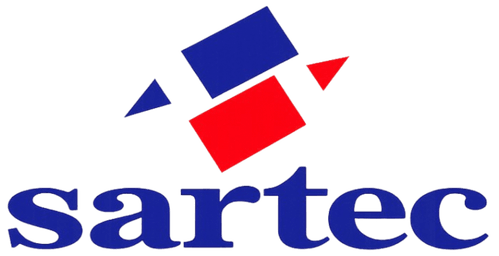

01Case · Sartec · 2026

Papelaria · São José dos CamposDa conversa ao trabalho.
Um CRM operacional integrado ao WhatsApp, com um agente de IA que organiza a entrada e entrega cada atendimento a uma pessoa — desenhado dentro da rotina real da Sartec Papelaria, loja da minha família.
- ClienteWhatsApp
Pessoas e empresas escrevem no mesmo canal de sempre.
- Agente de IATriagem
Identifica PF ou PJ e coleta o essencial.
- CRMTrabalho visível
Um card por atendimento, em quadros PF e PJ.
- AtendenteDecisão
Negocia, resolve e fecha, com o histórico à vista.
A IA organiza. A pessoa decide.
02Contexto
Funcionava apesar do sistema.
A Sartec é a papelaria da minha família, com mais de 30 anos em São José dos Campos. Cresci acompanhando o atendimento, os pedidos e a rotina da loja.
Pessoas físicas, empresas, cópias, orçamentos e fornecedores chegavam pelo mesmo WhatsApp. O atendimento dependia de memória e de rolar conversas. O problema não era volume: era falta de contexto, prioridade e responsável. Parti do que observei no balcão e no WhatsApp.
- Sem dono visívelDois atendentes podiam responder o mesmo cliente — ou nenhum, cada um achando que o outro já tinha respondido.
- PF e PJ no mesmo fluxoPessoas físicas pedem velocidade; empresas pedem contexto de conta, prazos e histórico. Tudo era tratado igual.
- Mídia sem contextoÁudios, PDFs e imagens chegavam soltos. Encontrar uma lista exigia rolar a conversa.
- Uma regra invisívelA janela de 24 horas do WhatsApp expirava sem aviso. A mensagem parecia enviada, mas não chegava.
- Decisão sem históricoEra preciso responder rápido sem ver a última interação, os pedidos ou o estado do cliente.
- Nenhuma visão de gestãoNão havia como saber o que estava aberto, com quem e há quanto tempo.
“Preciso de papel A4 pro escritório, umas 10 resmas.”
Empresa · sem responsável“Quanto custa plastificação A3? É urgente.”
Pessoa física · urgência não registrada(áudio de 1 min com a lista de material)
Pessoa física · sem transcrição“Vocês fazem xerox colorido? São 50 cópias.”
Pessoa física · aguardando03A tese
Não automatizar tudo. Dividir o trabalho.
A solução não foi automatizar o atendimento. Foi separar o que a IA podia organizar do que uma pessoa precisava decidir — e tornar essa passagem visível.
Recebe o contato, identifica pessoa física ou empresa, faz as perguntas certas na ordem certa e entrega um card que já chega com contexto.
Cada atendimento vira um card com etapa, responsável, prioridade e próxima ação. O histórico guarda mensagens, mídias e eventos.
Negocia, resolve exceções e fecha o pedido. É quem responde por preço, estoque e prazo.
Limites tão importantes quanto capacidades. O agente não vende, não confirma estoque, preço ou prazo e não disputa a conversa com a equipe. Quando a pergunta sai do seu escopo, ele reconhece e encaminha — não improvisa.
04O fluxo
Um atendimento, do início ao fim.
O mesmo pedido passa por três mãos. O desenho está nas passagens: quem fala, quando para e o que fica registrado.
- Cliente
Escreve no WhatsApp
Pelo canal que já usava. Nada muda para quem compra.
- Agente
Identifica o tipo de cliente
Pessoa física ou empresa, antes de qualquer outra pergunta: cada um segue o seu fluxo.
- Agente
Coleta o essencial
O que a pessoa precisa, quantidade, prazo. Pedidos de cópia são orientados sem encerrar a conversa.
- Agente
Handoff
O agente encerra a sua parte. Um card é criado no CRM e a passagem fica registrada no histórico.
- Atendente
Assume o atendimento
Um ato explícito: a equipe vê quem está com a conversa desde quando.
- Atendente
Responde, resolve ou reabre
Com o histórico completo. Resolver e reabrir também são ações explícitas, registradas.
Olá! Para te atender melhor, você é:
1 · Pessoa física
2 · Empresa / CNPJagente · triagem
2cliente
Pode me dizer o nome da empresa, o que precisa e se há um prazo?agente · contexto PJ
Empresa ABC. 500 cartões de visita com logo, em 5 dias úteis.cliente
Anotei tudo. Uma pessoa da nossa equipe vai continuar com você para o orçamento.agente · encerra a sua parte
Handoff registrado · card criado no CRM · PJ
05Decisões de UX
Ferramenta de operação, não de registro.
Cada card precisava responder rápido: quem é, o que quer, em que etapa está, quem está atendendo e qual é a próxima ação. Quatro decisões que viraram comportamento do sistema.
PF e PJ são fluxos, não filtros
Categoria e etapa são conceitos diferentes. Pessoas físicas e empresas ganharam quadros próprios, com critérios de prioridade distintos: velocidade de um lado, contexto de conta e histórico de pedidos do outro.
Assumir é um ato explícito
Para que dois atendentes não respondam a mesma pessoa — nem nenhum responda —, o painel pergunta quem está atendendo agora. Assumir e liberar são ações deliberadas, nunca efeito colateral de abrir uma conversa, e a transferência fica registrada.

O CRM mostra o que o cliente viu
Mensagens automáticas de retomada chegavam ao cliente, mas não apareciam no CRM: o cliente sabia de algo que a equipe não sabia. Todo template enviado passou a ser um evento no histórico, com horário e status de entrega.
- Cliente envia a lista de material
- Áudio recebido · transcrição disponível
- Janela de atendimento expirada
- Template de retomada enviado · entregue
- Atendente responde com o orçamento
Uma regra invisível, agora visível
A janela de 24 horas do WhatsApp ganhou estados com cor e badge próprios. O atendente não precisa saber a regra da plataforma: precisa saber se pode responder ou se precisa reabrir a conversa com um template.
E outras decisões, menores e igualmente concretas
Orientar sem encerrar
“Falou xerox, encerra” parecia eficiente. O agente passou a orientar para o setor de cópias e manter a triagem aberta para o resto do pedido.
Áudio virou requisito
No treinamento, a equipe mostrou que clientes mandam áudio o tempo todo. A transcrição entrou antes do lançamento — guardando o texto, não o áudio bruto.
Indicador que não orienta é ruído
Um alerta crítico no topo gerava urgência sem dizer o que fazer e saiu de lá. O contador passou a refletir a aba ativa, PF ou PJ.
Erros que dizem o que fazer
Mensagens técnicas genéricas viraram textos com causa e próxima ação: tentar de novo, esperar ou chamar ajuda.
06Implantação
Uma primeira fase, assistida.
Mudar como uma empresa atende não é publicar uma tela. O sistema entrou em uso aos poucos, com a equipe envolvida e os clientes avisados.
Mobile com arquitetura própria
O responsivo do desktop confundia. O celular ganhou chat em tela única, ações rápidas e um guia curto. Uma funcionalidade instável no mobile foi revertida antes de voltar: em atendimento real, confiabilidade vem antes de velocidade.
Onboarding que ensina o trabalho
Não um tour pelas áreas da tela, mas a operação: PF e PJ, quadro, card, prioridade, janela, abertura e finalização.
Troca de número gradual
Um número novo como etapa intermediária, em vez de migrar de uma vez o número principal da loja:
- Novoatendimento geral, com o agente
- Cópiasum número próprio para xerox e impressão
- Antigomantido para fornecedores
Os clientes foram avisados de que a nova forma de atendimento estava em teste, o que deixava espaço para voltar atrás.
07Desenvolvimento assistido por IA
A IA na execução. O critério, humano.
Transformei ambiguidade operacional em critérios, estados e especificações — e usei IA para implementar, revisando cada resultado contra a operação real.
- 01
Observar
O atendimento real, no balcão e no WhatsApp, antes de qualquer tela.
- 02
Especificar
Estados, transições, regras e critérios de aceite, com microcopy.
- 03
Implementar
Com Claude Code; ChatGPT para estratégia, prompts e revisão.
- 04
Validar
Com a equipe, em uso real e em dispositivos reais.
- 05
Ajustar
Pelo feedback da operação, documentando cada decisão.
O número estava registrado. O agente não respondia.
Depurar camada por camada, em vez de alterar código às cegas.
Entender o sistema o bastante para decidir bem, sem precisar escrever cada linha, faz parte do meu trabalho ao conduzir a implementação.
08Estado e aprendizados
Em uso. Ainda sem medição.
O case mostra decisões e o que elas resolvem na operação. Não afirma ganhos que ainda não foram medidos.
Em operação
Usado pela equipe da Sartec como ferramenta de atendimento, numa primeira fase assistida.
A equipe moldou o produto
O treinamento com a equipe mudou prioridades, como a transcrição de áudio. É retorno qualitativo, não pesquisa formal.
Impacto ainda por medir
Não há, até aqui, medição de tempo de resposta, volume de atendimentos ou vendas. Medir faz parte da próxima etapa.
Telas completas, ainda não
As telas do quadro e do histórico mostram clientes reais. Até existirem versões anonimizadas, o case usa reconstruções sinalizadas.
O CRM precisa mostrar o que o cliente viu, não apenas o que o atendente digitou.
Ferramenta interna também precisa de UX forte: é nela que a equipe passa o dia.